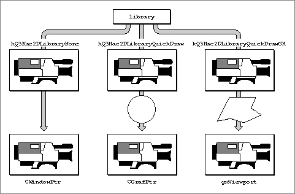

About Draw Context Objects
The QuickDraw 3D graphics library is able to direct its output--a rendered image--into one or more destinations (hereafter called its drawing destinations). For instance, you can use QuickDraw 3D to draw three-dimensional images into a standard Macintosh window. To achieve this cross-platform drawing capability, and thereby to insulate most of the application programming interfaces from details of the underlying drawing destination, QuickDraw 3D uses objects called draw context objects. A draw context object (or, more briefly, a draw context) is a QuickDraw 3D object that maintains information specific to a particular window system or drawing destination.In general, QuickDraw 3D does not duplicate existing methods of creating, handling user actions in, or manipulating drawing destinations. For example, QuickDraw 3D does not provide any means of creating a Macintosh window, handling events in the window, or modifying the size or location of the window. A QuickDraw 3D draw context, which provides a link between your application and the Macintosh window, simply contains the minimum amount of information it needs to draw into the window. You must use the Window Manager for all other operations on a Macintosh window.
A draw context is of type
TQ3DrawContextObject, which is a subtype of shared object. You need to create an instance of a specific type of draw context object and then attach it to a view, usually by callingQ3View_SetDrawContext. QuickDraw 3D currently supports these types of draw contexts:Not all drawing destinations are windows. QuickDraw 3D supports the pixmap draw context for drawing an image into an arbitrary region of memory (that is, a pixmap). You can, if necessary, even create instances of several kinds of draw contexts and draw the same scene into several different kinds of windows.
- Macintosh draw contexts
- pixmap draw contexts
All draw contexts share a set of basic properties, which are maintained in a structure of type
TQ3DrawContextData.typedef struct TQ3DrawContextData { TQ3DrawContextClearImageMethod clearImageMethod; TQ3ColorARGB clearImageColor; TQ3Area pane; TQ3Boolean paneState; TQ3Bitmap mask; TQ3Boolean maskState; TQ3Boolean doubleBufferState; } TQ3DrawContextData;These properties define the manner in which a window (or region of memory) is cleared, the size of the destination drawing pane, the drawing mask, and the state of the double buffering. These basic properties are designed to be independent of any particular window system. You can rely on the capabilities provided by these properties across window systems, whether or not the drawing destination supports them.In addition to these basic properties that are common to all draw contexts, each specific type of draw context defines context-specific properties. For example, the Macintosh draw context maintains information about the window into which QuickDraw 3D is to draw, the optional use of a two-dimensional graphics library (QuickDraw or QuickDraw GX), and so forth. The following sections describe the specific draw context types.
- Note
- Not all the basic properties maintained in the
TQ3DrawContextDatadata structure are supported by all draw contexts. For example, it makes no sense to use double buffering when drawing into a pixmap.Macintosh Draw Contexts
A Macintosh draw context is a draw context associated with a Macintosh window. You specify a Macintosh window by providing a pointer to a window (of typeCWindowPtr) which defines the area into which QuickDraw 3D will draw images of rendered models. In addition, you can attach to a Macintosh draw context either a QuickDraw color graphics port (of typeCGrafPort) or a QuickDraw GX view port (of typegxViewPort). Using this optional two-dimensional graphics library, you can achieve special effects such as clipping, dithering, and geometrical transforms of the image. At most one 2D graphics library can be associated with a Macintosh draw context at one time, and you are responsible for initializing the graphics library and performing any other required set-up.QuickDraw 3D cannot use a two-dimensional graphics library unless the draw context is configured for double buffering and the active buffer is set to the back buffer. QuickDraw and QuickDraw GX effects are applied when the front buffer is updated from the back buffer. Figure 12-1 illustrates the three possibilities for drawing in a Macintosh draw context. You can use QuickDraw to set a clip region (middle possibility) and QuickDraw GX to set a clip shape (right possibility).
Figure 12-1 Using a two-dimensional graphics library in a Macintosh draw context

Pixmap Draw Contexts
A pixmap draw context is a draw context associated with a pixmap, that is, a region of memory not directly associated with a window. The two-dimensional image produced by the renderer is simply written into that memory region.To draw an image into an offscreen graphics world (pointed to by a variable of type
- Note
- See the chapter "Geometric Objects" for information on the structure of pixmaps.

GWorldPtr), for instance, you need to (1) create the offscreen graphics world using standard QuickDraw routines, (2) callLockPixelsto lock the pixels in memory, and (3) create a pixmap draw context in which the address of the pixmap is the pointer returned by theGetPixBaseAddrfunction. You need to lock the pixmap in memory because QuickDraw 3D routines may move or purge memory.You can update a window without rendering to it by rendering to an offscreen graphics world and then copying the data to the window.
- Note
- See the book Inside Macintosh: Imaging With QuickDraw for complete information about offscreen graphics worlds.
Subtopics
- Macintosh Draw Contexts
- Pixmap Draw Contexts